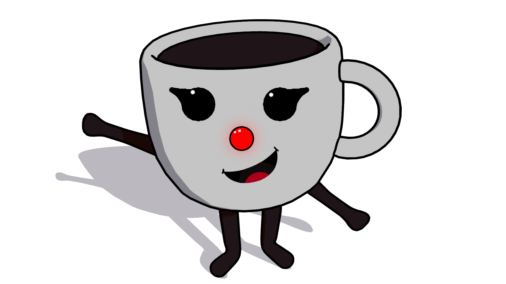

Sarah: de koffie assistent
Sarah is een innovatief systeem dat het bijvullen van het waterreservoir van je koffieapparaat moeiteloos en efficiënt maakt. Geen onderbroken koffiemomenten meer door een leeg reservoir – Sarah monitort continu het waterniveau en geeft tijdig een signaal wanneer bijvullen nodig is. In geavanceerdere versies kan Sarah zelfs automatisch water bijvullen vanuit een aangesloten bron, zodat jij je kunt focussen op wat écht telt: genieten van een perfecte kop koffie. Of je nu een drukke werkplek runt of gewoon thuis houdt van gemak, Sarah zorgt voor een consistente koffie-ervaring zonder onderbrekingen. Slim, betrouwbaar en ontworpen met oog voor gebruiksgemak – Sarah is de stille kracht achter elke goede kop koffie.
Fasen
Fase 1
In fase 1 hebben we de focus gelegd op het optijd aangeven van het waterreservoir dat leeg is.
Fase 2
In fase 2 hebben we de focus gelegd op het automatisch bijvullen van het waterreservoir.
Stappenplan
- In het waterreservoir zit een draadje met twee metalen pinnen.
- Zolang er water tussen de pinnen zit, kan er elektrische geleiding plaatsvinden.
- Wanneer het waterniveau zakt, komt er geen water meer tussen de pinnen, waardoor de elektrische kring wordt onderbroken.
- Het apparaat merkt dat de stroomkring niet meer gesloten is en weet zo dat het water op dat niveau op is.
-
Vervolgens:
🔊 gaat er een piepsignaal af,
💡 en brandt een LED-lampje als waarschuwing. - Zodra je het reservoir weer bijvult, komt er weer water tussen de pinnen → de kring sluit zich opnieuw → het geluid en lampje gaan uit.